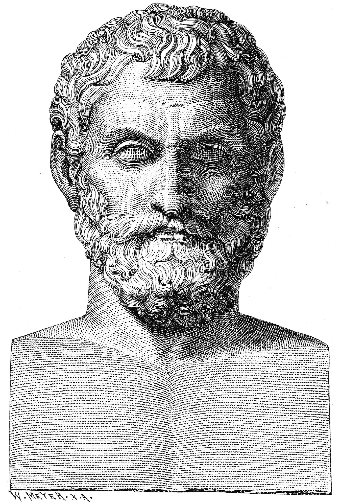

Thales din Milet
“ Trecutul este sigur, viitorul este neclar.
“

Primul
filozof grec si primul matematician al Greciei Antice a fost Thales din
Milet.
Thales din Milet a devenit celebru pentru ca a prezis cu multa
exactitate eclipsa de Soare din 8 mai 585 i.Hr., folosindu-se de
cunostintele pe care si le-a insusit de la babilonieni. A descoperit
“Carul Mic”.
Thales
din Milet a fost numit de greci “Sophos”, adică
înțelept, pentru că a dat multe sfaturi, iar cel mai cunoscut
este cel gravat pe fațada din Oracolul lui Apolo din Delphi:
“Cunoaste-te pe tine insuti !”.
Negustor de profesie, Thales a făcut multe călătorii in Egipt, Creta si
Asia, călătorii care i-au permis să-și îmbogațeasca cunoștințele
din diferite domenii. Thales a fost unul din cei mai importanți oameni
din Antichitate și atunci când s-a intocmit lista cu cei “Șapte
Întelepți” din Grecia Antica, Thales a fost trecut primul pe acea
listă. A ajutat foarte mult la dezvoltarea matematicii, astronomiei si
filozofiei. A făcut multe descoperiri în domeniul matematicii – a
formulat mai multe teoreme geometrice care îi poartă numele.